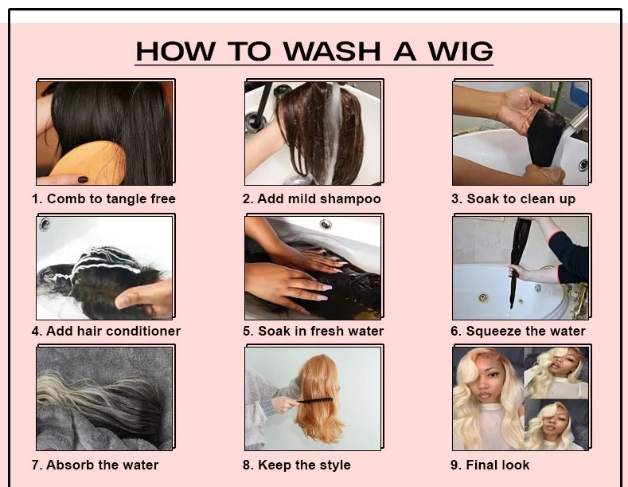
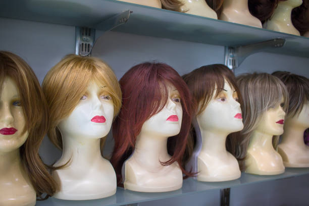
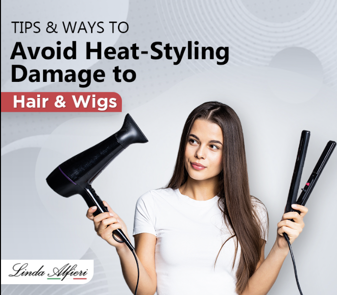
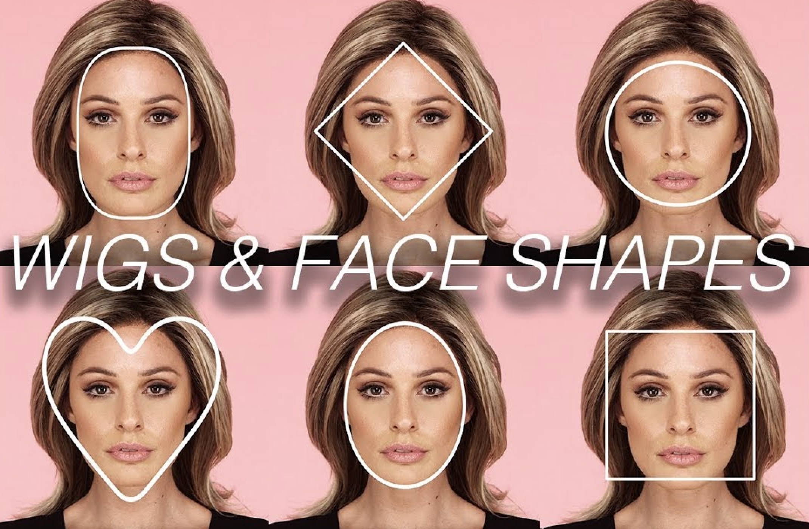

5 Essential Wig Care Tips for Long-Lasting Style and Confidence
Wigs are more than just a fashion accessory—they’re an investment in your confidence and style. Whether you wear wigs for convenience, medical reasons, or as a style statement, proper care is crucial to keeping them in excellent condition. Follow these five essential tips to maintain your wig’s longevity, appearance, and comfort.
1. Wash Your Wig Properly
Washing your wig is an essential part of wig care, but it’s crucial to do it correctly to prevent damage. Use a wig-friendly shampoo and lukewarm water to clean your wig without compromising the fibers. Avoid using regular shampoos, as they can strip the wig of its texture and shine.
2. Detangle Regularly
Tangles can cause significant damage to wig fibers over time. Use a wide-tooth comb or a wig brush to detangle your wig after each use. Start at the ends and work your way up to the roots, being gentle to avoid pulling or snapping the fibers.

3. Store Your Wig Correctly
Proper storage is key to maintaining your wig’s shape and preventing damage. When not in use, place your wig on a wig stand to retain its style and avoid tangles.
4. Avoid Heat Damage
Heat is one of the leading causes of damage to wigs, especially synthetic ones. If your wig is not labeled as heat-resistant, avoid using curling irons, straighteners, or blow dryers.
5. Use Wig-Friendly Products
Not all hair products are suitable for wigs. Invest in wig-specific shampoos, conditioners, and styling products designed to protect and enhance the fibers.

Take the first step towards flawless wig care. Download our FREE Wig Care Guide today!
How to Choose the Perfect Wig for Every Occasion
Wigs are transformative. They let you express your personality, adapt to different events, or experiment with styles without a long-term commitment. But with so many choices available, picking the right wig for every occasion can feel overwhelming. In this guide, we’ll walk you through how to find the perfect wig—one that matches your style, face shape, and the event you’re attending.
Understanding Wig Types
Before diving into style selection, it’s essential to understand the different types of wigs available:
- Human Hair Wigs: These are made from natural hair, offering a realistic look and feel.
- Synthetic Wigs: Made from synthetic fibers, these wigs are affordable and low-maintenance.
- Lace Front Wigs: Featuring a lace front for a natural hairline.
Styling for Different Occasions
Matching your wig style to the event ensures your look feels appropriate and confident.
Choosing a Wig for Your Face Shape
The shape of your face plays a crucial role in determining which wig style will flatter you most.
Ready to find your perfect wig? Browse our custom wig collection today!